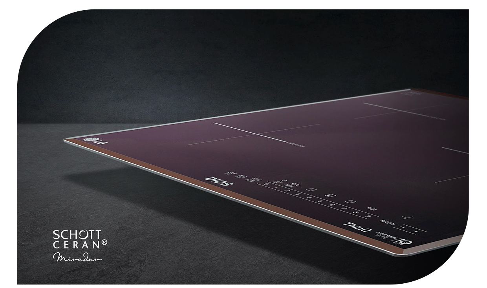

기능 2
미라듀어 글라스
스크래치도 놓치지 않을 거예요

* 이해를 돕기 위해 연출된 이미지 입니다.
* SCHOTT사 CERAN Miradur의 스크래치 내구성에 대한 독일 TUV 라인란드 제3자 인증 획득
* 실제 사용 환경에서는 차이가 발생할 수 있음
미라듀어 글라스는 독일 쇼트사의 프리미엄 글라스로
조리과정에서 발생하는 긁힘이 적고
언제나 깨끗한 사용이 가능해요.